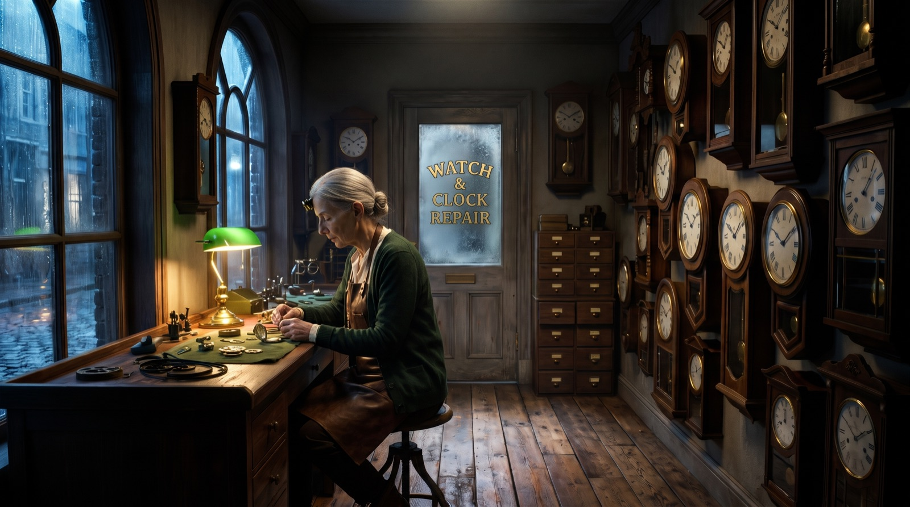
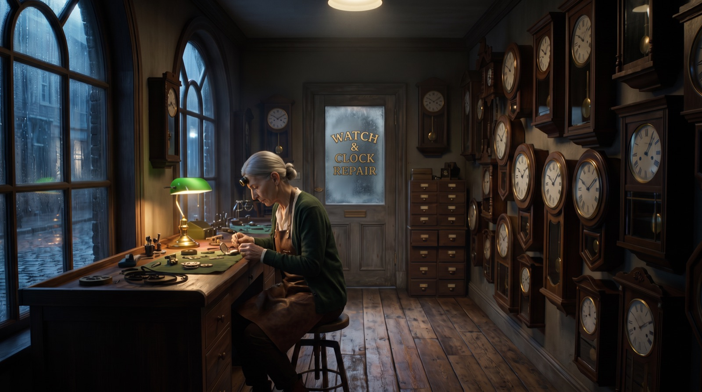
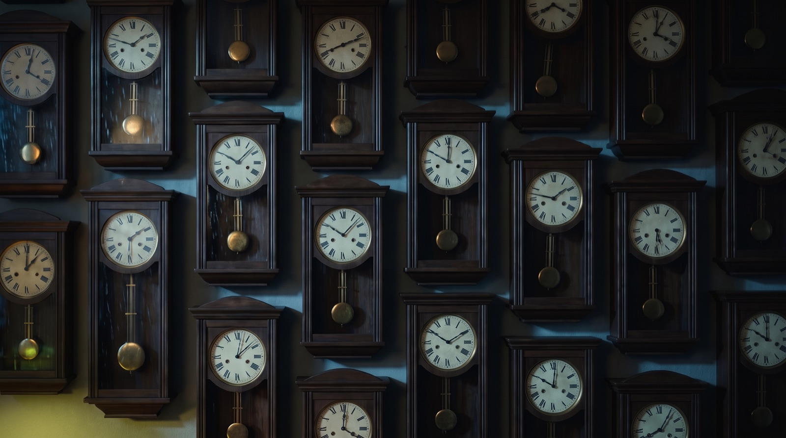
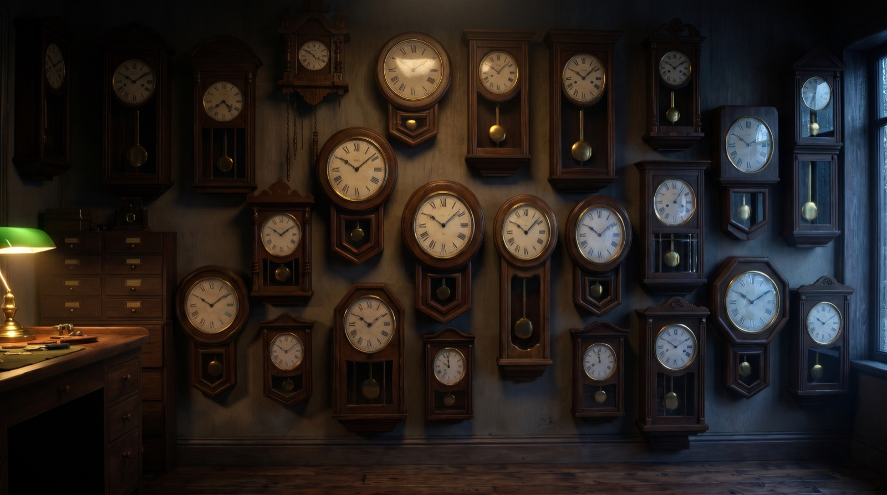

Contact sheets de personaje y de escenario: el método del cine para mantener la consistencia cuando hacés video con IA. Con cada prompt, cada modelo y cada error real del corto de ejemplo.
Cada paso usa al anterior como referencia. Si te salteás uno, el siguiente no tiene de dónde copiar.
Cada plantilla trae el prompt listo. Donde dice [ADN] pegás tu ficha (la armás en la sección 03). Abajo de cada una, el ejemplo real de La relojera y lo que salió mal.
El párrafo fijo que va en todos tus prompts. Regla de oro: nunca se reescribe, se copia y se pega. Completá en español; los campos de texto libre se traducen al inglés.
Primer fotograma con Prompt Cine (6 cajas, referencia: Darius Khondji) + las hojas como referencia en Nano Banana Pro. Movimiento con Prompt Camera en Kling. Sonido: solo efectos, sin música.
Arrastrá la barra en las imágenes. En los videos, dale play a los dos.
Mismo plano, mismas hojas de referencia. Cambia solo cómo está escrito el prompt.


A manoPrompt CineEn la pared de relojes no hay ventanas (mirá la planta). Se corrigió diciendo qué queda detrás de la cámara.


ErrorCorregido"Los péndulos se detienen todos a la vez". Kling 3.0 no lo entendió (2 intentos). Kling 4.0, con los tiempos escritos en el prompt, sí.
A: primer fotograma + Kling 3.0 (control total). B: Kling 3.0 Omni con las hojas directo (más rápido de armar, perdió el monóculo y movió de más la cámara).
Todo dentro de Higgsfield. Costos medidos en las transacciones reales del corto.
| Para qué | Modelo | Por qué este | Costo |
|---|---|---|---|
| Las 7 hojas y los primeros fotogramas | Nano Banana Pro 2k | Escribe texto legible (etiquetas, planta), hace diagramas y acepta imágenes de referencia: cada hoja copia a la anterior. A veces el trabajo figura como "Nano Banana 2": se cobra como Pro, es el mismo. | 2 créditos / imagen |
| Video, camino A (recomendado) | Kling 3.0 pro · 5 s · sonido | Con primer fotograma: el encuadre ya está aprobado, Kling solo lo anima. | 10 créditos / clip |
| Acciones difíciles | Kling 4.0 image-to-video · 1080p · 5 s | Entendió "se detienen todos a la vez" cuando Kling 3.0 no. | 16,25 créditos / clip |
| Video, camino B (exploración) | Kling 3.0 Omni hasta 7 referencias | Le pasás las hojas directo, sin primer fotograma. Menos control fino y tarda más. | 10 créditos / clip |
Nada de esto se escondió: son los errores que te van a pasar a vos.
Revisá cada fotograma antes de mandarlo a Kling: rehacer una imagen cuesta 2 créditos, rehacer un video cuesta 10 o más. Se guarda en este navegador.